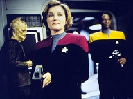
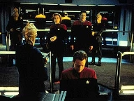
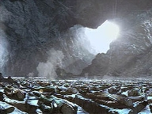
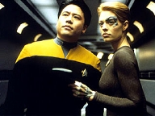
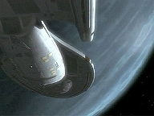

| MANCHETE
DO EPISDIO
Tripulantes
so atacados em seus sonhos
Episdio
anterior | Prximo episdio Sinopse:
Data Estelar: 51471.3.  Depois
de uma noite de sono agitado, a tripulao percebe que todos a bordo da
Voyager tiveram pesadelos envolvendo o mesmo aliengena. A preocupao
comea quando vrios oficiais no despertam. Chakotay espera descobrir o que
se passa, tentando uma tcnica chamada de sonho lcido, que lhe permite tomar
o controle dos eventos enquanto dorme.
Ao dormir, o comandante encontra o aliengena em questo
e pergunta-lhe sobre o que est acontecendo com os colegas. Descobre que, para
aquela espcie, o estado do sonho a realidade. Durante sculos, a raa foi
ameaada pelas "espcies acordadas" e agora eles decidiram retaliar.
Chakotay informado de que se Voyager deixar aquela regio, a tripulao
vai acordar. Assim feito. Contudo, ao chegar fronteira determinada, a nave
atacada.
 Os aliengenas invadem e tomam o controle de tudo.
Enquanto a tripulao tenta retomar a Voyager, Chakotay percebe que ainda
est sonhando. Deixa o seu sonho lcido e acorda na Enfermaria. O Doutor lhe
diz que todos a bordo esto dormindo e que os padres neurais deles mostram
que vivenciam o mesmo sonho. Os aliengenas tm a vantagem no sonho, mas
Chakotay percebe que se encontrar os corpos dos aliengenas enquanto estiver
acordado, mudar a situao. No sonho, Janeway e os outros so mantidos
refns, mas comeam a desconfiar que aquilo no real. Quando a capit sai
ilesa de uma exploso do ncleo do reator, descobre que, de fato, ainda est
sonhando.
 Quanto
mais prximo fica dos aliengenas, mais Chakotay enfrenta dificuldades em se
manter acordado. Por fim, encontra-os em uma caverna, deitados ao lado de um
grande transmissor que responsvel por mant-los em estado de sono. Ele usa
o estimulante que o Doutor lhe preparou em um dos inimigos e ordena que o
aparelho seja desativado. Na Voyager, o Doutor tem ordens de disparar contra o
local se o aliengena no aceitar a exigncia. Ameaados de destruio, os
invasores neutralizam sua tecnologia e libertam a tripulao, que passa a
acordar normalmente.
Comentrios:
 "Waking Moments"
tpico exemplar de episdio mediano - o que Voyager faz melhor que
ningum. engraado, tem linhas de dilogo impagveis, mas no consegue
passar disso. Acaba fazendo jus tradio da srie: consolida-se como o
"divertimento da hora" e s. O nico questionamento cientfico que
se consegue espremer : como seria se uma sociedade existisse em realidade
mental semelhante ao que consideramos fantasia? Dizem reviewers
estrangeiros: "Ora, ela tomaria o controle da Voyager por motivos que no
se pode explicar"!
Realmente, faltam aos aliengenas motivos para atacar e
invadir a Voyager. medida que a trama se desenvolve, descobre-se apenas que a
tripulao foi posta para dormir e tornada refm. Em momento algum, o
telespectador encontra as razes por trs das aes da espcie. O que eles
querem com a Voyager? Por que confinar os tripulantes na rea de carga? Em todo
o episdio perdura a busca por respostas, mas elas nunca chegam. Eles
aparentam, apenas, ser patologicamente neurticos.
 Ao
f - atento ou no - fica complicado entender o acordar e dormir de Chakotay.
Ela desperta de seu sonho... e, depois, desperta de novo.
Ele prprio j no sabe se est dormindo ou
acordado. O uso da imagem da lua da Terra tenta amenizar a confuso um pouco.
Ela pea-chave no momento em que o comandante a v na tela principal da
Ponte e, logo mais, quando v o planeta dos aliengenas. Era o que distinguia
a realidade do irreal.
No h muito mais o que tratar sobre o
segmento. Resta dizer que as "ondas cerebrais idnticas", que,
segundo o Doutor, explicam o sonho coletivo da tripulao, no convencem.
Se cada um est vivenciando o sonho sob uma perspectiva nica, por que os
padres neurais haveriam de ser iguais? Tecnobaboseira permeando roteiros de Jornada.
Enfim, "Waking Moments"
passa por ter seus instantes engraados, como a conversa impagvel entre
Janeway e Tuvok no turboelevador. Mas totalmente dispensvel trama
maior. Em nada acrescenta longa viagem da Voyager em direo Terra.
Citaes:
Janeway - "Tell me more about your
dream. Where exactly did you see the alien?"
("Conte-me mais sobre o seu sonho. Onde, exatamente, viu o aliengena?")
Tuvok - "As a matter of fact, it was here in the turbolift."
("Na verdade, foi aqui, no turboelevador.")
Janeway
- "What happened?"
("O que aconteceu?")
Tuvok - "The alien simply stared at me as if scrutinizing my appearance."
("O aliengena simplesmente me encarou, como se estivesse ridicularizando
a minha aparncia.")
Janeway - "That's what happened in my dream. What did you do?"
("Foi o que aconteceu no meu sonho. O que voc fez?")
Tuvok - "I returned to my quarters."
("Eu retornei para os meus aposentos.")
Janeway
- "Did the alien follow you?"
("O aliengena o seguiu?")
Tuvok - "He did."
("Sim.")
Janeway - "And then?"
("E ento?")
Tuvok - "He watched me."
("Ele me observou.")
Janeway
- "Doing what?"
("Fazendo o qu?")
Tuvok - "Getting dressed."
("Me vestindo.") Janeway
- "Either I've become impervious to antimatter explosions, or we're still
dreaming."
("Ou eu sou imune a exploses de anti-matria, ou ainda estamos
sonhando.")
B'Elanna - "A warp core explosion should have destroyed the ship."
("Uma exploso do ncleo do reator deveria ter destrudo a nave.")
Janeway
- "If I were awake, or if any of this were real. Which it obviously isn't.
Things just weren't adding up. Chakotay's disappearance, the warp core failing
to eject, and as Chakotay said, lucid dreaming is about taking control so I
took a chance."
("Se estivssemos acordados, ou se tudo isso fosse real. Obviamente
no . As coisas no estavam se encaixando. O desaparecimento de Chakotay,
o reator de dobra falhando em ejetar e, como Chakotay disse, sonho lcido se
trata de assumir o controle, ento decidi tentar.")
Tuvok - "Surely there must
have been a less extreme method of testing your assumptions. As Captain, you
shouldn't be taking chances with your life."
("Certamente, deve ter havido um mtodo menos extremo de testar as
suas suposies. Como capit, no deveria tomar chances com a sua vida.")
Janeway
- "I'm touched by your concern, Tuvok."
("Estou tocada com a sua preocupao, Tuvok.")
Trivia:
 Na cena em que B'Elanna est na Engenharia cercada de fumaa, pode-se ver,
rapidamente, a gravidez avanada de
Roxann Dawson. Gravar com a atriz naquelas condies provou-se um grande
problema tcnico. O departamento de figurino improvisou um novo jaleco, para
esconder as formas de Dawson.
Na cena em que B'Elanna est na Engenharia cercada de fumaa, pode-se ver,
rapidamente, a gravidez avanada de
Roxann Dawson. Gravar com a atriz naquelas condies provou-se um grande
problema tcnico. O departamento de figurino improvisou um novo jaleco, para
esconder as formas de Dawson.
Atores contam que Tim Russ realmente estava n quando Tuvok entrou na Ponte da
Voyager. As risadas vistas na tela so genunas, j que a cena no havia
sido ensaiada ou esperada. Sem que os colegas soubessem, Russ, sempre
brincalho nos bastidores, apareceu no cenrio com uma prtese que aumentava
exageradamente seu pnis.
A USS Voyager pode viajar pelo percurso de um
parsec em 24 horas terrestres.
Embora o quarto de Kim j tenha sido mostrado no
deck 3 de Voyager, neste episdio estabelecido que os aposentos do alferes
ficam no deck 6, quarto 105-2.
Waking Moments o segundo episdio,
de um total de sete, escritos por Andr Bormanis para Voyager. Ficha
tcnica: Direo de
Alexander Singer
Escrito por Andre Bormanis
Exibido em 14/01/1998
Produo: 081 Elenco: Kate
Mulgrew como Kathryn Janeway
Robert Beltran como
Chakotay
Roxann Biggs-Dawson como B'Elanna Torres
Robert
Duncan McNeill como Tom Paris
Ethan Phillips como
Neelix
Robert Picardo como Doutor
Tim Russ
como Tuvok
Jeri Ryan como Seven of Nine
Garrett Wang como Harry Kim Elenco
convidado:
Mark Colson como Aliengena
Jennifer Grundy como Alferes
Episdio
anterior | Prximo episdio
|